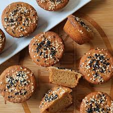

Home
Mochi Muffins

These yummy mochi muffins made with rice flour and coconut
milk make a great breakfast, snack, or casual dessert.
“If you want to try mochi, this is a fun recipe to start with,”
says recipe developer and test kitchen expert Juliana Hale.
We couldn’t agree more! This mochi muffin recipe is sweet,
chewy, light, and fluffy. What’s not to love?
Ingredients:
- Sweet rice flour: These mochi muffins start with glutinous
or sweet rice flour (such as Mochiko).
- Sugars: A blend of brown and white sugars gives the perfect
amount of sweetness.
- Baking powder: Baking powder acts as a leavener, which means
it helps the muffins rise.
- Salt: A pinch of salt enhances the flavors of the other ingredients,
but it won’t make the muffins taste salty.
- Coconut milk: You’ll need a can of unsweetened coconut milk.
- Eggs: Two whole eggs lend moisture and help bind the muffin batter together.
- Butter: A half a stick of melted butter adds even more moisture and flavor.
- Vanilla: A dash of vanilla extract creates a deeper flavor.
- Maple syrup: Add more sweetness and warm flavor with two tablespoons
of maple syrup.
- Sesame seeds: Sesame seeds take the flavor up a notch.
Steps:
You’ll find the full, step-by-step recipe below — but here’s a brief overview
of what you can expect when you make mochi muffins:
- Whisk the dry ingredients together in one bowl and the wet ingredients in another.
- Add the dry mixture to the wet mixture.
- Spoon the batter into prepared muffin cups and sprinkle with sesame seeds.
- Bake the muffins until a toothpick comes out clean.